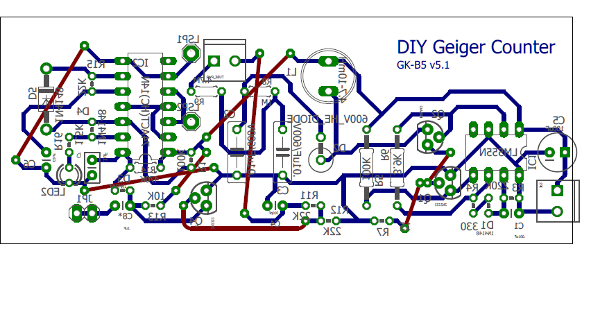

For my X-ray project, I needed to make a Geiger Counter as a saftey component (A Geiger Counter is a device
that measures radiation, of which X-ray machines produce a lot of). So I searched around online
for a simple-"ish" geiger counter circuit. Eventually, I came across this website.
The schematic diagram was open-source, and the parts were easily sourced, which could not be said about other designs I'd come across. So I went about making
the device. For the project, I decided to design my own circuit board, to practice my CAD skills. I used AutoDesk Eagle, because it had a free student version. After
a few days, I managed to design a board:

After designing it, I printed the board on glossy paper, and used an old clothing iron to transfer the ink onto a blank circuit board. After doing this, I dipped
the board in acid to finish the design. Once the board was finished, I soldered all the components in, and 3d Printed a case for the geiger counter.
Video of completed Geiger-Counter: